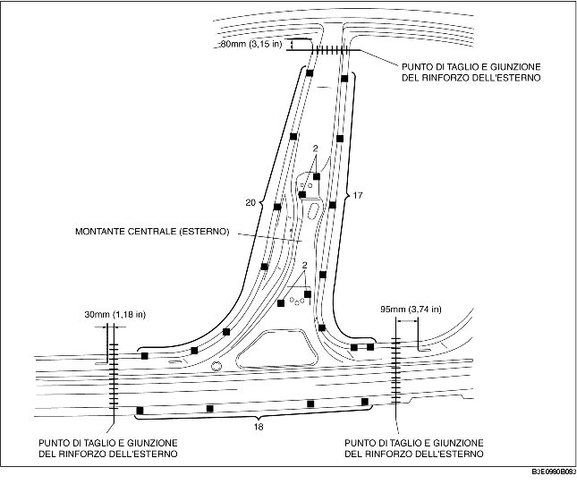

1. Quando si esegue la giunzione e il taglio della parti nuove ed esistenti, fissare provvisoriamente la parte nuova in posizione ed eseguire le necessarie misurazioni e regolazioni in modo da rispettare le misure standard.
2. Prima di installare i nuovi pannelli praticare i fori per la saldatura.
3. Installare nel seguente ordine: pannello interno, rinforzo, e pannello esterno.
4. Saldare i 30 punti indicati da (A) ed installare il rinforzo del montante centrale (interno) al rinforzo del montante centrale.
5. Installare provvisoriamente i nuovi pannelli e assicurarsi che combacino perfettamente.
